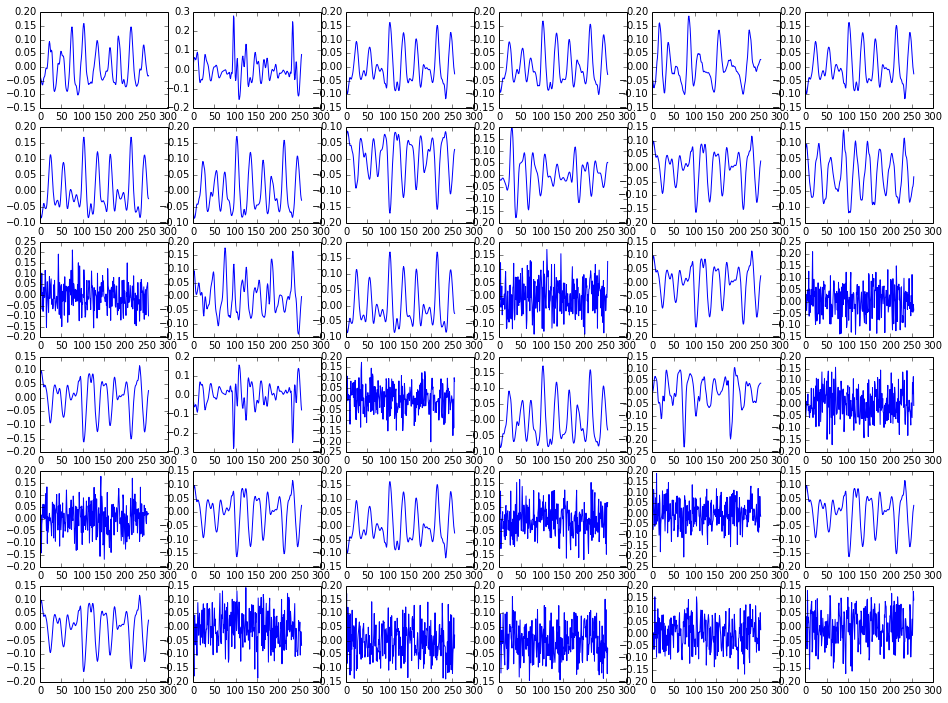
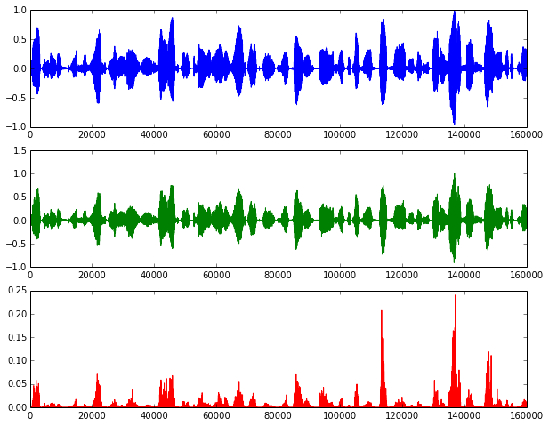

25 02 2014
Sparse signal approximations are the basis for a variety of signal processing techniques. Such approximations are usually employed with the objective of having a signal representation that is more meaningful, malleable, and robust to noise than the ones obtained by standard transform methods [Sturm2009]. The so-called dictionary based methods (DBM) decompose a signal into a linear combination of waveforms through an approximation technique such as Matching Pursuit (MP) [Mallat1993], Orthogonal Matching Pursuit (OMP) [Pati1993], or basis pursuit [Chen2001]. The collection of waveforms that can be selected for the linear combination is called a dictionary. This dictionary is usually overcomplete, either because it is formed by merging complete dictionaries or because the waveforms are chosen arbitrarily (and we have more waveforms than the length of the signal we want to represent).
The sparse coding problem is usually formulated either as a sparsity-constrained problem or as an error-constrained problem. The formulations are as follows:
Sparsity-constrained: \(\underline{\hat{\gamma}} = \underset{\underline{\gamma}}{arg\,min}\|\underline{x} - D \underline{\gamma}\|_2^2 \quad\text{s.t.}\quad \|\underline{\gamma}\|_0 \leq K\)
Error-constrained: \(\underline{\hat{\gamma}} = \underset{\underline{\gamma}}{arg\,min}\|\underline{\gamma}\|_0 \quad\text{s.t.}\quad \|\underline{x} - D \underline{\gamma}\|_2^2 \leq \epsilon\)
In the first one, the idea is that we want to represent the signal by a linear combination of up to K known waveforms. In the second formulation, we want the squared error of the representation to be below a certain threshold. Both formulations are useful, depending on the problem you are trying to solve: the first one will lead to more compact representations, while with the second one you can avoid higher representation errors.
The second formulation is also useful for applications which need denoising: consider you have a corrupted version of your signal, and also that you know (more or less) the signal-to-noise ratio (SNR). If the noise is very different from the signal you are interested in and your dictionary is optimized to represent these signals only, it may be the case that noise is not well represented by the waveforms in your dictionary. So, you could use the second formulation, setting \(\epsilon\) as the estimated noise level, and expect that a good part of the noise component is not going to be represented in the sparse approximation.
Reconstructing a speech signal based on a learned set of segments is not a new thing. It is done in a well-known technique called vector quantization (VQ). In VQ, the signal is reconstructed by using only a single atom (or codeword, on the VQ literature jargon) per signal frame. The dictionary (or codebook) is usually designed by a nearest-neighbor method, which aims to find the codebook that can reconstruct a signal by using the codewords that have the smaller distances to the original signal frames while minimizing the residual. K-means is a codebook learning algorithm for VQ that solves this problem by dividing the training samples into \(K\) clusters of the nearest neighbors of each of the \(K\) items in the initial codebook. The codebook is then updated by finding the centroid for each of the \(K\) clusters. These steps are ran iteratively until the algorithm converges to a local minimum solution.
For sparse coding, we want to use multiple atoms to reconstruct the signal. In the snippet below, we generate a dictionary with 1024 waveforms by using the dictionary learning functions available in scikit-learn, which is based on a paper by [Mairal2009]. The training data consists of two minutes of audio from the TIMIT database; sentences were randomly chosen and then split into frames of 256 samples each.
# Build the dictionary from sklearn.decomposition import MiniBatchDictionaryLearning dico = MiniBatchDictionaryLearning(n_components=1024, alpha=1, n_iter=100) D = dico.fit(training_data).components_
If we take a look into some of the learned waveforms in the figure above, we'll see that we have both low-frequency, quasiperiodic signals (which are probably matching vowels) and signals with more high-frequency components that look a bit noisy (probably representing stops/fricatives).
Now that we have a dictionary which (supposedly) is good for representing speech signals, let's use Orthogonal Matching Pursuit (OMP) to reconstruct a speech segment based on a linear combination of dictionary entries. Let's get 10 seconds of audio from TIMIT (from a segment of the set that was not in the training set) and reconstruct it using a sparse approximation. We use the sparsity-based constraint form, as we are more interested in representing speech in a sparse way:
# Get sample speech segment to reconstruct test_data = data[fs*200:fs*210].reshape(fs*10/256, 256) # Reconstruct it frame-by-frame using a linear combination of 20 # atoms per frame (sparsity-constrained OMP) result = numpy.ndarray((test_data.shape[0],512)) from sklearn.decomposition import SparseCoder coder = SparseCoder(dictionary = D, transform_n_nonzero_coefs=20, transform_alpha=None, transform_algorithm="omp") result = coder.transform(test_data) for n in range(result.shape[0]): out[n*256:(n+1)*256] = sum(D.T*result[n],axis=1)
Here are the results: you can listen above the original file and the reconstructed one.
Original:
Reconstructed with 20 atoms/frame:
These figures show the original signal, the reconstructed one, and the squared error:
While the reconstruction error is low for most of the time considering we are using only 20 non-zero values per frame to represent the signal, as opposed to using 256 samples, we can clearly hear the reconstruction-related artifacts. However, that may be OK if all we want with the learned dictionary is to have a sparser representation for speech that will be used later in our synthesizer.
I started working on some experiments comparing the performance of a sample predictor to two other predictors: one based on LPC coefficients and the other on a sparse representation of speech. As we discussed in class, speech has some parameters that change quickly (source/excitation signal), while others change slowly (articulation-related). In the first experiments prof. Bengio suggested, we were working on an MLP-based generative model for samples without any consideration for phones. His second suggestion was to design a generative model for the next sample conditioned on the previous, current, and next phone.
I started developing generative models based on MLPs for the three representations above, using one-hot encoded phones and the relative position in time of the current phone as inputs. For the model based on LPCs, I am planning to have a separate generative model for the excitation signal, which is going to work pretty much like the next-sample predictor we worked on previously; this model could also be based on the previous, current, and next phone, previous samples, and things such as pitch/speaker gender. Unfortunately, due to a bug in pylearn2 I was not able to get them working yet. Vincent said there's already a pull request which solves this issue and it seems it will get fixed anytime soon.
Last note: you can view the IPython notebook containing all the code used to generate the dictionary and the plots here, or download and run it interactively in your computer.
| [Sturm2009] |
|
| [Mallat1993] |
|
| [Pati1993] |
|
| [Chen2001] |
|
| [Mairal2009] |
|